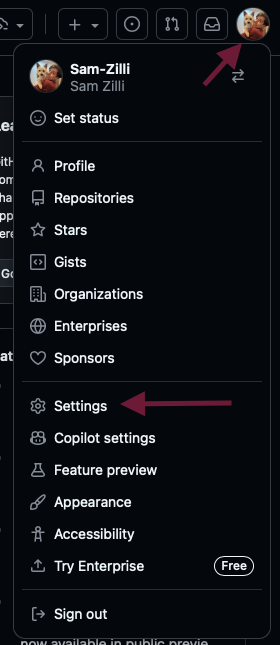
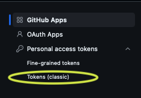
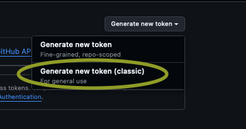

Login to GitHub.com. Click your profile picture in the top right, then select Settings.

Step 2: Access Developer Settings
In the left sidebar, scroll down and click Developer settings (at the very bottom).
Step 3: Personal Access Tokens
In Developer settings, select Personal access tokens - then Tokens (classic).

Step 4: Create a New Token
Click Generate new token. Choose Classic. You may be asked for your GitHub password.

Step 5: Name and Permissions
Give your token a name (e.g., lmsc261).
Set expiration for CUSTOM and the date 12/12/2025 (the end of the semester).
In the SELECT SCOPES selection: select ALL the boxes for permissions if new to GitHub.
Finally, click Generate Token.
⚠️ IMPORTANT!
Copy the token and save it somewhere safe. You won't be able to see it again once you navigate away from this page! You will need this token OFTEN.
Step 7: Secure Your Token
Treat your token like a password. If you think it’s compromised, revoke it from the Personal access tokens page.
Done!
You’re ready to use your GitHub token! Click below to continue.